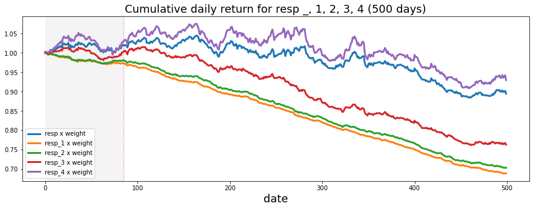
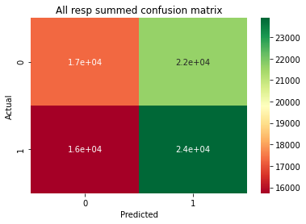
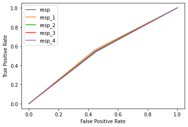

#hide_input
df = df.set_index('ts_id', drop=True)
df.drop(columns=[f"resp_{i}" for i in range(1, 5)], inplace=True)
print(f'Done loading data. df shape is {df.shape}')
TARGET = 'resp'
FEATURES = [f"feature_{i}" for i in range(1, 130)]
train_pos, train_neg = df.loc[df.feature_0 > 0], df.loc[df.feature_0 < 0]
train_pos.drop(columns=[TARGET, 'feature_0'], inplace=True)
train_neg.drop(columns=[TARGET, 'feature_0'], inplace=True)
gc.collect()
nan_neg = pd.read_csv("../input/janestreetimputeddata/nan_neg.csv", header=None, sep=' ').values.astype(int)
nan_pos = pd.read_csv("../input/janestreetimputeddata/nan_pos.csv", header=None, sep=' ').values.astype(int)
# Split into X and y
from copy import deepcopy as dc
X_pos = dc(train_pos[FEATURES].values)
X_neg = dc(train_neg[FEATURES].values)
del train_pos, train_neg
gc.collect()
# load files
file = 'knn_5'
path = "../input/janestreetimputeddata/"
X_pos[nan_pos[0], nan_pos[1]] = pd.read_csv(path+f"positive_{file}.csv",
header=None, sep=' ').values.flatten()
X_neg[nan_neg[0], nan_neg[1]] = pd.read_csv(path+f"negative_{file}.csv",
header=None, sep=' ').values.flatten()
df = np.concatenate((X_pos, X_neg), axis=0)
del X_pos, X_neg, nan_neg, nan_pos
gc.collect()
df = pd.DataFrame(df, columns = FEATURES)Jane Street Market Prediction Kaggle Competition
- toc: true
- badges: true
- comments: true
- author: Jaekang Lee
- categories: [MLP, python, feature engineering, imputation, Jane Street, Kaggle, Visualization, Big Data, random forest]
Got a score of 9443.499 (249th place out of 3616 competitors) using MLP.
Library 📂
::: {#cell-4 .cell _cell_guid=‘b1076dfc-b9ad-4769-8c92-a6c4dae69d19’ _uuid=‘8f2839f25d086af736a60e9eeb907d3b93b6e0e5’ execution_count=1}
#hide_output
import numpy as np # linear algebra
import pandas as pd # data processing, CSV file I/O (e.g. pd.read_csv)
from tensorflow.keras.layers import Input, Dense, BatchNormalization, Dropout, Concatenate, Lambda, GaussianNoise, Activation
from tensorflow.keras.models import Model, Sequential
from tensorflow.keras.losses import BinaryCrossentropy
from tensorflow.keras.optimizers import Adam
from tensorflow.keras.callbacks import EarlyStopping
from tensorflow.keras.layers.experimental.preprocessing import Normalization
import tensorflow as tf
import matplotlib.pyplot as plt
from tqdm import tqdm
import seaborn as sns
from random import choices
!pip install datatable > /dev/null
import datatable as dt
from sklearn import impute
import gc
import os
for dirname, _, filenames in os.walk('/kaggle/input'):
for filename in filenames:
print(os.path.join(dirname, filename))
SEED = 42
tf.random.set_seed(SEED)
np.random.seed(SEED)/kaggle/input/data-wrangling/__results__.html
/kaggle/input/data-wrangling/__notebook_source__.ipynb
/kaggle/input/data-wrangling/imputed.csv
/kaggle/input/data-wrangling/__notebook__.ipynb
/kaggle/input/data-wrangling/__output__.json
/kaggle/input/data-wrangling/one_on_top.csv
/kaggle/input/data-wrangling/custom.css
/kaggle/input/jane-street-market-prediction/example_sample_submission.csv
/kaggle/input/jane-street-market-prediction/features.csv
/kaggle/input/jane-street-market-prediction/example_test.csv
/kaggle/input/jane-street-market-prediction/train.csv
/kaggle/input/jane-street-market-prediction/janestreet/competition.cpython-37m-x86_64-linux-gnu.so
/kaggle/input/jane-street-market-prediction/janestreet/__init__.py
/kaggle/input/janestreetimputeddata/negative_knn_1.csv
/kaggle/input/janestreetimputeddata/negative_forward_backward.csv
/kaggle/input/janestreetimputeddata/negative_target.csv
/kaggle/input/janestreetimputeddata/negative_iterative_impute.csv
/kaggle/input/janestreetimputeddata/positive_knn_5.csv
/kaggle/input/janestreetimputeddata/positive_knn_3.csv
/kaggle/input/janestreetimputeddata/positive_iterative_impute.csv
/kaggle/input/janestreetimputeddata/negative_knn_3.csv
/kaggle/input/janestreetimputeddata/positive_forward_backward.csv
/kaggle/input/janestreetimputeddata/positive_knn_1.csv
/kaggle/input/janestreetimputeddata/nan_neg.csv
/kaggle/input/janestreetimputeddata/positive_soft_impute.csv
/kaggle/input/janestreetimputeddata/nan_pos.csv
/kaggle/input/janestreetimputeddata/negative_knn_5.csv
/kaggle/input/janestreetimputeddata/negative_soft_impute.csv
/kaggle/input/janestreetimputeddata/positive_target.csv:::
Methodology
Null Values 🈳
As discussed before in my EDA notebook, we have couple of options to handle null values.
1. Drop all nans 2. Impute with median or mean 3. Feedforward/backward 4. KNN imputer 5. Be creative!
In this notebook, I used KNN imputer with 5 nearest neighbors to fill the nans. This takes a long time to run so I suggest downloading the imputed data files from here by louise2001. Note that he also uploaded soft and iterative imputes.
#hide_input
train = dt.fread('../input/jane-street-market-prediction/train.csv')
train = train.to_pandas()
train = train[['date', 'weight', 'ts_id', 'resp_1', 'resp_2', 'resp_3', 'resp', 'resp_4','feature_0']]
gc.collect()
# split train into 1s and 0s
upper = train[train['feature_0'] == 1].sort_values(by='ts_id', axis=0, ascending=True)
lower = train[train['feature_0'] == -1].sort_values(by='ts_id', axis=0, ascending=True)
# attach
train = pd.concat([upper, lower], axis = 0)
del upper, lower
gc.collect()
# save files
df.to_csv('imputed.csv', index=False)
train.to_csv('one_on_top.csv', index=False)
gc.collect()Import Data 📚
In this notebook, we are just going to load the imputed data instead of running the feature engineering here. Since it is very time consuming and takes a lot of RAM.
#hide_output
imputed_df = dt.fread('../input/data-wrangling/imputed.csv')
imputed_df = imputed_df.to_pandas()
train = dt.fread('../input/data-wrangling/one_on_top.csv')
train = train.to_pandas()
df = pd.concat([train, imputed_df], axis=1, ignore_index=False)
del train, imputed_df
gc.collect()3815#hide_input
df.head(5)| date | weight | ts_id | resp_1 | resp_2 | resp_3 | resp | resp_4 | feature_0 | feature_1 | ... | feature_120 | feature_121 | feature_122 | feature_123 | feature_124 | feature_125 | feature_126 | feature_127 | feature_128 | feature_129 | |
|---|---|---|---|---|---|---|---|---|---|---|---|---|---|---|---|---|---|---|---|---|---|
| 0 | 0 | 0.000000 | 0 | 0.009916 | 0.014079 | 0.008773 | 0.006270 | 0.001390 | 1 | -1.872746 | ... | 0.603878 | 6.086305 | 1.168391 | 8.313583 | 1.782433 | 14.018213 | 2.653056 | 12.600292 | 2.301488 | 11.445807 |
| 1 | 0 | 0.138531 | 4 | 0.001252 | 0.002165 | -0.001215 | -0.002604 | -0.006219 | 1 | -3.172026 | ... | 0.745019 | 5.354213 | 0.344850 | 4.101145 | 0.614252 | 6.623456 | 0.800129 | 5.233243 | 0.362636 | 3.926633 |
| 2 | 0 | 0.116557 | 8 | -0.005460 | -0.007301 | -0.009085 | -0.001677 | -0.003546 | 1 | -3.172026 | ... | 1.120067 | 4.167835 | 1.537913 | 4.785838 | 1.637435 | 6.968002 | 2.354338 | 5.825499 | 1.778029 | 4.740577 |
| 3 | 0 | 0.160117 | 9 | 0.005976 | 0.004345 | 0.023712 | 0.020317 | 0.035360 | 1 | 2.744408 | ... | 1.430190 | 3.332330 | 1.796860 | 3.177064 | 0.999252 | 2.906432 | 1.589816 | 2.435999 | 1.472419 | 2.245991 |
| 4 | 0 | 0.109651 | 10 | 0.006899 | 0.003405 | 0.000134 | -0.000690 | -0.003040 | 1 | -3.172026 | ... | 1.581096 | 6.305170 | 2.324290 | 4.881133 | 2.115830 | 6.337250 | 3.059392 | 5.350729 | 2.755876 | 4.968388 |
5 rows × 138 columns
Feature Engineering 🔧
We first do two feature engineering right off the bat. 1. We are going to drop any rows with ‘weight’ column equal to 0. This tells us that overall gain from such trade is 0. This would be like telling machine to just guess if learned correctly.
2. To explain why we are dropping all dates before day 85 can be shown visually below. Before the day 85, we can clearly see that the trend has changed quite drastically.
#hide_input
df['weight_resp'] = df['weight']*df['resp']
df['weight_resp_1'] = df['weight']*df['resp_1']
df['weight_resp_2'] = df['weight']*df['resp_2']
df['weight_resp_3'] = df['weight']*df['resp_3']
df['weight_resp_4'] = df['weight']*df['resp_4']
fig, ax = plt.subplots(figsize=(15, 5))
resp = pd.Series(1+(df.groupby('date')['weight_resp'].mean())).cumprod()
resp_1 = pd.Series(1+(df.groupby('date')['weight_resp_1'].mean())).cumprod()
resp_2 = pd.Series(1+(df.groupby('date')['weight_resp_2'].mean())).cumprod()
resp_3 = pd.Series(1+(df.groupby('date')['weight_resp_3'].mean())).cumprod()
resp_4 = pd.Series(1+(df.groupby('date')['weight_resp_4'].mean())).cumprod()
ax.set_xlabel ("Day", fontsize=18)
ax.set_title ("Cumulative daily return for resp _, 1, 2, 3, 4 (500 days)", fontsize=18)
resp.plot(lw=3, label='resp x weight')
resp_1.plot(lw=3, label='resp_1 x weight')
resp_2.plot(lw=3, label='resp_2 x weight')
resp_3.plot(lw=3, label='resp_3 x weight')
resp_4.plot(lw=3, label='resp_4 x weight')
# day 85 marker
ax.axvline(x=85, linestyle='--', alpha=0.3, c='red', lw=1)
ax.axvspan(0, 85 , color=sns.xkcd_rgb['grey'], alpha=0.1)
plt.legend(loc="lower left");
del df['weight_resp'], df['weight_resp_1'], df['weight_resp_2'],df['weight_resp_3'],df['weight_resp_4']
del resp, resp_1, resp_2, resp_3, resp_4
gc.collect()7310
df = df.query('date > 85').reset_index(drop = True)
df = df[df['weight'] != 0]Note that we only have 130 features compared to over 2 million datas. We easily make more features and avoid curse of dimensionality.
#hide_output
# Add action column (this is our target)
df['action'] = ((df['resp'].values) > 0).astype(int)
# feature names
features = [c for c in df.columns if "feature" in c]
# resp names
resp_cols = ['resp_1', 'resp_2', 'resp_3', 'resp', 'resp_4'](1571415, 139)# We don't need time, date and weight anymore
df = df.loc[:, df.columns.str.contains('feature|resp', regex=True)]Let us do log transform and add them as new columns to the dataframe. Since performing on all features will give me out of memory error, let’s do this on group_0 which has tag_0 from features.csv. For more information, check out my EDA notebook.
# Get log transformation for tag groups
tag_0_group = [9, 10, 19, 20, 29, 30, 56, 73, 79, 85, 91, 97, 103, 109, 115, 122, 123]
for col in tag_0_group:
df[str('log_'+str(col))] = (df[str('feature_'+str(col))]-df[str('feature_'+str(col))].min()+1).transform(np.log)#hide_input
df.head(5)| feature_0 | feature_1 | feature_2 | feature_3 | feature_4 | feature_5 | feature_6 | feature_7 | feature_8 | feature_9 | ... | log_73 | log_79 | log_85 | log_91 | log_97 | log_103 | log_109 | log_115 | log_122 | log_123 | |
|---|---|---|---|---|---|---|---|---|---|---|---|---|---|---|---|---|---|---|---|---|---|
| 0 | 1 | 3.151305 | 5.467693 | -0.164505 | -0.189219 | 0.663966 | 0.988896 | 0.661407 | 0.897346 | 2.184804 | ... | 4.371497 | 4.954968 | 1.009198e-07 | 1.235292e-07 | 1.372731e+00 | 7.735990e-01 | 1.583237 | 0.994426 | 2.206237 | 2.390646 |
| 2 | 1 | 1.514607 | 0.596214 | 0.324062 | 0.154730 | 0.845069 | 0.521491 | 0.860309 | 0.595352 | 0.310387 | ... | 4.385074 | 4.956836 | 1.009198e-07 | 1.235292e-07 | 7.875868e-01 | 5.235099e-01 | 0.793093 | 0.487668 | 2.191892 | 2.100277 |
| 4 | 1 | -0.833827 | -0.049648 | 0.262484 | 0.421901 | 0.098124 | 0.171741 | 0.034455 | 0.169169 | 0.512029 | ... | 4.373749 | 4.934122 | 6.493667e-01 | 8.441718e-01 | 1.314139e+00 | 1.969321e+00 | 1.542457 | 2.065858 | 1.813171 | 2.373700 |
| 5 | 1 | -3.172026 | -3.093182 | 0.155047 | 0.343024 | 0.451619 | 0.914937 | -0.596771 | -0.827370 | -0.974472 | ... | 4.395633 | 4.958532 | 1.072512e+00 | 7.936777e-01 | 1.070915e-07 | 7.520313e-08 | 1.298665 | 0.488986 | 1.943198 | 2.112894 |
| 6 | 1 | -3.172026 | -3.093182 | 0.188790 | 0.232964 | 0.500087 | 0.639725 | -0.083674 | 0.019814 | -4.050318 | ... | 4.390247 | 4.959537 | 8.272507e-01 | 1.036085e+00 | 6.587185e-01 | 4.546515e-01 | 1.000972 | 1.028346 | 1.824567 | 2.101414 |
5 rows × 147 columns
Other ideas for feature engineering: 1. aggregating categorical columns by ‘tags’ on features.csv 2. count above mean, mean abs change, abs energy 3. log transform, kurt transform and other transforms 4. get creative!
Reasons not to do more feature engineering: 1. We have no idea what the features represent so it might be meaningless and dangerous 2. The dataset is really big so adding couple more columns will make me run out of memory 3. Much slower computation
Split data ✂️
We are going to use approximately 20000 data as test set. Our target value is action which we already have defined as any weight times resp above 0.(positive trades)
#hide_output
# Train test split
from sklearn.model_selection import train_test_split
X = df.loc[:, df.columns.str.contains('feature|log')]
y = np.stack([(df[c] > 0).astype('int') for c in resp_cols]).T
del df
gc.collect()
X_train, X_test, y_train, y_test = train_test_split(X, y, test_size=0.01, random_state=42, shuffle=True)
del X, y
gc.collect()0Implementation #2
Algoritms & Technique
For technique, we already applied a lot of our knowledge from our EDA into our dataset. (Feature engineering, imputing nulls, dropping < 85 days, etc). For algorithm, we are going to use machine learning.
Now we have our data ready for training. There are hundreds of classifier model we can choose from and explore. However, after studying the Kaggle notebooks other participants have submitted, all high scored model seem to use Neural Network. I am going to try using random forest classifier and MLP to experiment here. Random Forest are always good for early because it is easy to just build and evaluate. Neural network is good at learning complicated models with the right parameter tuning.
#### Metrics Since this is a multiclass-classifying problem (5 types of ‘resp’ -> gave us 5 pos vs neg target variables), for performance metrics we are going to use AUC(area under curve) as well as pure accuracy score for overall performance. With this metrics, we can see how our model is performing on unseen data and prevent overfitting easily to see any area for improvement accordingly. Sklearn and Seaborn provides great graphing tools for these metrics as well. #### Complications Note that the worst complication I had to face going through rest of this notebook was the size of the data. Depending on your computer’s RAM size and GPU computation speed this experience will vary. In my case, I ran into out of memory a hundreds of times. To avoid this, try using cloud training. If not make sure to save your computed data frequently and clean RAM with gc.collect and del function to free up space as much as possible.
Results
Random Forest Classifier evaluation and validation
#hide_output
from sklearn.ensemble import RandomForestClassifier
rnd_clf = RandomForestClassifier(n_estimators=100, max_leaf_nodes=32, n_jobs=-1, verbose=2)
rnd_clf.fit(X_train, y_train)[Parallel(n_jobs=-1)]: Using backend ThreadingBackend with 2 concurrent workers.building tree 1 of 100
building tree 2 of 100
building tree 3 of 100
building tree 4 of 100
building tree 5 of 100
building tree 6 of 100
building tree 7 of 100
building tree 8 of 100
building tree 9 of 100
building tree 10 of 100
building tree 11 of 100
building tree 12 of 100
building tree 13 of 100
building tree 14 of 100
building tree 15 of 100
building tree 16 of 100
building tree 17 of 100
building tree 18 of 100
building tree 19 of 100
building tree 20 of 100
building tree 21 of 100
building tree 22 of 100
building tree 23 of 100
building tree 24 of 100
building tree 25 of 100
building tree 26 of 100
building tree 27 of 100
building tree 28 of 100
building tree 29 of 100
building tree 30 of 100
building tree 31 of 100
building tree 32 of 100
building tree 33 of 100
building tree 34 of 100
building tree 35 of 100
building tree 36 of 100
building tree 37 of 100
building tree 38 of 100[Parallel(n_jobs=-1)]: Done 37 tasks | elapsed: 9.8minbuilding tree 39 of 100
building tree 40 of 100
building tree 41 of 100
building tree 42 of 100
building tree 43 of 100
building tree 44 of 100
building tree 45 of 100
building tree 46 of 100
building tree 47 of 100
building tree 48 of 100
building tree 49 of 100
building tree 50 of 100
building tree 51 of 100
building tree 52 of 100
building tree 53 of 100
building tree 54 of 100
building tree 55 of 100
building tree 56 of 100
building tree 57 of 100
building tree 58 of 100
building tree 59 of 100
building tree 60 of 100
building tree 61 of 100
building tree 62 of 100
building tree 63 of 100
building tree 64 of 100
building tree 65 of 100
building tree 66 of 100
building tree 67 of 100
building tree 68 of 100
building tree 69 of 100
building tree 70 of 100
building tree 71 of 100
building tree 72 of 100
building tree 73 of 100
building tree 74 of 100
building tree 75 of 100
building tree 76 of 100
building tree 77 of 100
building tree 78 of 100
building tree 79 of 100
building tree 80 of 100
building tree 81 of 100
building tree 82 of 100
building tree 83 of 100
building tree 84 of 100
building tree 85 of 100
building tree 86 of 100
building tree 87 of 100
building tree 88 of 100
building tree 89 of 100
building tree 90 of 100
building tree 91 of 100
building tree 92 of 100
building tree 93 of 100
building tree 94 of 100
building tree 95 of 100
building tree 96 of 100
building tree 97 of 100
building tree 98 of 100
building tree 99 of 100
building tree 100 of 100[Parallel(n_jobs=-1)]: Done 100 out of 100 | elapsed: 25.3min finishedRandomForestClassifier(max_leaf_nodes=32, n_jobs=-1, verbose=2)test_pred = rnd_clf.predict(X_test)
test_pred = np.rint(test_pred)
test_acc = np.sum(test_pred == y_test)/(y_test.shape[0]*5)
print("test accuracy: " + str(test_acc))[Parallel(n_jobs=2)]: Using backend ThreadingBackend with 2 concurrent workers.
[Parallel(n_jobs=2)]: Done 37 tasks | elapsed: 0.1stest accuracy: 0.5242761692650334[Parallel(n_jobs=2)]: Done 100 out of 100 | elapsed: 0.3s finished#hide_input
from sklearn.metrics import confusion_matrix
conf_mat = confusion_matrix(y_test[:,3], test_pred[:,3])
resp_1 = confusion_matrix(y_test[:,0], test_pred[:,0])
resp_2 = confusion_matrix(y_test[:,1], test_pred[:,1])
resp_3 = confusion_matrix(y_test[:,2], test_pred[:,2])
resp_4 = confusion_matrix(y_test[:,4], test_pred[:,4])
all_resp = np.add(np.add(np.add(conf_mat, resp_1),np.add(resp_2, resp_3)),resp_4)
sns.heatmap(all_resp, cmap="RdYlGn", annot=True).set_title("All resp summed confusion matrix")
plt.xlabel("Predicted")
plt.ylabel("Actual")
print("resp")
print(conf_mat)
print("resp_1")
print(resp_1)
print("resp_2")
print(resp_2)
print("resp_3")
print(resp_3)
print("resp_4")
print(resp_4)resp
[[3474 4349]
[3205 4687]]
resp_1
[[4261 3487]
[3768 4199]]
resp_2
[[3740 4001]
[3367 4607]]
resp_3
[[2823 4959]
[2643 5290]]
resp_4
[[3003 4858]
[2743 5111]]
Result 1 justification
So we got about 52.4% accuracy with random forest.
From the confusion matrix, we can tell that the model is having harder time predicting 0’s correctly. It is actually doing a good job of classifying 1’s though! So with this model, we can expect to get lots of good trades but also fail to not go for bad trades.
Result 1 implementation
This was our first pass solution. Although we were able to get a positive score of 52.4%, when submitted to Jane Street for Evaluation, it returned a score of 0. Meaning we have lost more profit than we gained. (The competition didn’t return negative scores and only calculated positive gains). This suggests that although we were able to get more ‘correct’ trades, the scale of the trades we failed to predict correctly have out-weighted our correct predictions.
MLP evaluation and validation
Classic multiple layer perceptron with AUC(Area Under Curve) metrics. After looking at many notebooks on Kaggle, MLP seem to perform the best with short run time. Let us build one ourselves.
def create_mlp(
num_columns, num_labels, hidden_units, dropout_rates, label_smoothing, learning_rate
):
inp = tf.keras.layers.Input(shape=(num_columns,))
x = tf.keras.layers.BatchNormalization()(inp)
x = tf.keras.layers.Dropout(dropout_rates[0])(x)
for i in range(len(hidden_units)):
x = tf.keras.layers.Dense(hidden_units[i])(x)
x = tf.keras.layers.BatchNormalization()(x)
x = tf.keras.layers.Activation(tf.keras.activations.swish)(x)
x = tf.keras.layers.Dropout(dropout_rates[i + 1])(x)
x = tf.keras.layers.Dense(num_labels)(x)
out = tf.keras.layers.Activation("sigmoid")(x)
model = tf.keras.models.Model(inputs=inp, outputs=out)
model.compile(
optimizer=tf.keras.optimizers.Adam(learning_rate=learning_rate),
loss=tf.keras.losses.BinaryCrossentropy(label_smoothing=label_smoothing),
metrics=tf.keras.metrics.AUC(name="AUC"),
)
return model#hide_output
batch_size = 4096
hidden_units = [150, 150, 150]
dropout_rates = [0.20, 0.20, 0.20, 0.20]
label_smoothing = 1e-2
learning_rate = 3e-3
#with tpu_strategy.scope():
clf = create_mlp(
X_train.shape[1], 5, hidden_units, dropout_rates, label_smoothing, learning_rate
)
clf.fit(X_train, y_train, epochs=100, batch_size=batch_size)
models = []
models.append(clf)Epoch 1/100
380/380 [==============================] - 4s 10ms/step - loss: 0.6933 - AUC: 0.5320
Epoch 2/100
380/380 [==============================] - 3s 9ms/step - loss: 0.6897 - AUC: 0.5434
Epoch 3/100
380/380 [==============================] - 3s 8ms/step - loss: 0.6891 - AUC: 0.5466
Epoch 4/100
380/380 [==============================] - 3s 9ms/step - loss: 0.6887 - AUC: 0.5483
Epoch 5/100
380/380 [==============================] - 3s 8ms/step - loss: 0.6885 - AUC: 0.5498
Epoch 6/100
380/380 [==============================] - 3s 9ms/step - loss: 0.6882 - AUC: 0.5512
Epoch 7/100
380/380 [==============================] - 3s 9ms/step - loss: 0.6880 - AUC: 0.5519
Epoch 8/100
380/380 [==============================] - 3s 8ms/step - loss: 0.6878 - AUC: 0.5532
Epoch 9/100
380/380 [==============================] - 3s 9ms/step - loss: 0.6877 - AUC: 0.5536
Epoch 10/100
380/380 [==============================] - 3s 9ms/step - loss: 0.6875 - AUC: 0.5541
Epoch 11/100
380/380 [==============================] - 3s 8ms/step - loss: 0.6872 - AUC: 0.5552
Epoch 12/100
380/380 [==============================] - 3s 8ms/step - loss: 0.6871 - AUC: 0.5557
Epoch 13/100
380/380 [==============================] - 3s 8ms/step - loss: 0.6870 - AUC: 0.5562
Epoch 14/100
380/380 [==============================] - 3s 9ms/step - loss: 0.6868 - AUC: 0.5568
Epoch 15/100
380/380 [==============================] - 3s 8ms/step - loss: 0.6866 - AUC: 0.5578
Epoch 16/100
380/380 [==============================] - 3s 8ms/step - loss: 0.6866 - AUC: 0.5577
Epoch 17/100
380/380 [==============================] - 4s 10ms/step - loss: 0.6864 - AUC: 0.5583
Epoch 18/100
380/380 [==============================] - 4s 10ms/step - loss: 0.6863 - AUC: 0.5586
Epoch 19/100
380/380 [==============================] - 3s 9ms/step - loss: 0.6862 - AUC: 0.5591
Epoch 20/100
380/380 [==============================] - 4s 9ms/step - loss: 0.6861 - AUC: 0.5595
Epoch 21/100
380/380 [==============================] - 3s 9ms/step - loss: 0.6860 - AUC: 0.5598
Epoch 22/100
380/380 [==============================] - 3s 8ms/step - loss: 0.6859 - AUC: 0.5602
Epoch 23/100
380/380 [==============================] - 3s 9ms/step - loss: 0.6858 - AUC: 0.5603
Epoch 24/100
380/380 [==============================] - 3s 8ms/step - loss: 0.6857 - AUC: 0.5611
Epoch 25/100
380/380 [==============================] - 3s 9ms/step - loss: 0.6856 - AUC: 0.5608
Epoch 26/100
380/380 [==============================] - 3s 8ms/step - loss: 0.6855 - AUC: 0.5613
Epoch 27/100
380/380 [==============================] - 3s 9ms/step - loss: 0.6854 - AUC: 0.5616
Epoch 28/100
380/380 [==============================] - 4s 9ms/step - loss: 0.6854 - AUC: 0.5616
Epoch 29/100
380/380 [==============================] - 3s 8ms/step - loss: 0.6853 - AUC: 0.5618
Epoch 30/100
380/380 [==============================] - 3s 9ms/step - loss: 0.6851 - AUC: 0.5625
Epoch 31/100
380/380 [==============================] - 3s 8ms/step - loss: 0.6851 - AUC: 0.5625
Epoch 32/100
380/380 [==============================] - 3s 8ms/step - loss: 0.6850 - AUC: 0.5628
Epoch 33/100
380/380 [==============================] - 3s 9ms/step - loss: 0.6850 - AUC: 0.5629
Epoch 34/100
380/380 [==============================] - 3s 8ms/step - loss: 0.6849 - AUC: 0.5633
Epoch 35/100
380/380 [==============================] - 4s 9ms/step - loss: 0.6849 - AUC: 0.5631
Epoch 36/100
380/380 [==============================] - 3s 9ms/step - loss: 0.6848 - AUC: 0.5634
Epoch 37/100
380/380 [==============================] - 4s 11ms/step - loss: 0.6847 - AUC: 0.5639
Epoch 38/100
380/380 [==============================] - 3s 9ms/step - loss: 0.6847 - AUC: 0.5639
Epoch 39/100
380/380 [==============================] - 3s 8ms/step - loss: 0.6846 - AUC: 0.5641
Epoch 40/100
380/380 [==============================] - 3s 9ms/step - loss: 0.6846 - AUC: 0.5641
Epoch 41/100
380/380 [==============================] - 3s 8ms/step - loss: 0.6846 - AUC: 0.5641
Epoch 42/100
380/380 [==============================] - 3s 8ms/step - loss: 0.6844 - AUC: 0.5646
Epoch 43/100
380/380 [==============================] - 3s 9ms/step - loss: 0.6845 - AUC: 0.5645
Epoch 44/100
380/380 [==============================] - 3s 8ms/step - loss: 0.6844 - AUC: 0.5645
Epoch 45/100
380/380 [==============================] - 3s 8ms/step - loss: 0.6843 - AUC: 0.5652
Epoch 46/100
380/380 [==============================] - 3s 9ms/step - loss: 0.6843 - AUC: 0.5652
Epoch 47/100
380/380 [==============================] - 4s 9ms/step - loss: 0.6842 - AUC: 0.5651
Epoch 48/100
380/380 [==============================] - 3s 8ms/step - loss: 0.6842 - AUC: 0.5654
Epoch 49/100
380/380 [==============================] - 3s 8ms/step - loss: 0.6842 - AUC: 0.5654
Epoch 50/100
380/380 [==============================] - 3s 9ms/step - loss: 0.6841 - AUC: 0.5656
Epoch 51/100
380/380 [==============================] - 3s 8ms/step - loss: 0.6841 - AUC: 0.5658
Epoch 52/100
380/380 [==============================] - 3s 8ms/step - loss: 0.6840 - AUC: 0.5661
Epoch 53/100
380/380 [==============================] - 4s 10ms/step - loss: 0.6840 - AUC: 0.5656
Epoch 54/100
380/380 [==============================] - 4s 9ms/step - loss: 0.6840 - AUC: 0.5659
Epoch 55/100
380/380 [==============================] - 3s 9ms/step - loss: 0.6839 - AUC: 0.5659
Epoch 56/100
380/380 [==============================] - 4s 10ms/step - loss: 0.6838 - AUC: 0.5661
Epoch 57/100
380/380 [==============================] - 3s 8ms/step - loss: 0.6839 - AUC: 0.5661
Epoch 58/100
380/380 [==============================] - 3s 8ms/step - loss: 0.6838 - AUC: 0.5664
Epoch 59/100
380/380 [==============================] - 3s 9ms/step - loss: 0.6838 - AUC: 0.5664
Epoch 60/100
380/380 [==============================] - 3s 8ms/step - loss: 0.6838 - AUC: 0.5664
Epoch 61/100
380/380 [==============================] - 3s 8ms/step - loss: 0.6836 - AUC: 0.5672
Epoch 62/100
380/380 [==============================] - 3s 8ms/step - loss: 0.6837 - AUC: 0.5667
Epoch 63/100
380/380 [==============================] - 3s 9ms/step - loss: 0.6837 - AUC: 0.5667
Epoch 64/100
380/380 [==============================] - 3s 8ms/step - loss: 0.6836 - AUC: 0.5671
Epoch 65/100
380/380 [==============================] - 3s 8ms/step - loss: 0.6836 - AUC: 0.5670
Epoch 66/100
380/380 [==============================] - 4s 10ms/step - loss: 0.6837 - AUC: 0.5667
Epoch 67/100
380/380 [==============================] - 3s 8ms/step - loss: 0.6836 - AUC: 0.5669
Epoch 68/100
380/380 [==============================] - 3s 8ms/step - loss: 0.6835 - AUC: 0.5672
Epoch 69/100
380/380 [==============================] - 3s 9ms/step - loss: 0.6835 - AUC: 0.5675
Epoch 70/100
380/380 [==============================] - 3s 8ms/step - loss: 0.6835 - AUC: 0.5672
Epoch 71/100
380/380 [==============================] - 4s 9ms/step - loss: 0.6834 - AUC: 0.5673
Epoch 72/100
380/380 [==============================] - 4s 9ms/step - loss: 0.6833 - AUC: 0.5680
Epoch 73/100
380/380 [==============================] - 4s 10ms/step - loss: 0.6834 - AUC: 0.5676
Epoch 74/100
380/380 [==============================] - 3s 8ms/step - loss: 0.6834 - AUC: 0.5672
Epoch 75/100
380/380 [==============================] - 3s 9ms/step - loss: 0.6833 - AUC: 0.5675
Epoch 76/100
380/380 [==============================] - 4s 10ms/step - loss: 0.6833 - AUC: 0.5678
Epoch 77/100
380/380 [==============================] - 3s 8ms/step - loss: 0.6833 - AUC: 0.5678
Epoch 78/100
380/380 [==============================] - 3s 8ms/step - loss: 0.6832 - AUC: 0.5680
Epoch 79/100
380/380 [==============================] - 3s 9ms/step - loss: 0.6832 - AUC: 0.5683
Epoch 80/100
380/380 [==============================] - 3s 8ms/step - loss: 0.6832 - AUC: 0.5680
Epoch 81/100
380/380 [==============================] - 3s 8ms/step - loss: 0.6833 - AUC: 0.5678
Epoch 82/100
380/380 [==============================] - 3s 8ms/step - loss: 0.6832 - AUC: 0.5681
Epoch 83/100
380/380 [==============================] - 3s 9ms/step - loss: 0.6831 - AUC: 0.5682
Epoch 84/100
380/380 [==============================] - 3s 8ms/step - loss: 0.6831 - AUC: 0.5682
Epoch 85/100
380/380 [==============================] - 3s 9ms/step - loss: 0.6832 - AUC: 0.5680
Epoch 86/100
380/380 [==============================] - 4s 10ms/step - loss: 0.6832 - AUC: 0.5683
Epoch 87/100
380/380 [==============================] - 3s 9ms/step - loss: 0.6830 - AUC: 0.5686
Epoch 88/100
380/380 [==============================] - 3s 8ms/step - loss: 0.6830 - AUC: 0.5687
Epoch 89/100
380/380 [==============================] - 4s 10ms/step - loss: 0.6830 - AUC: 0.5685
Epoch 90/100
380/380 [==============================] - 4s 9ms/step - loss: 0.6830 - AUC: 0.5686
Epoch 91/100
380/380 [==============================] - 3s 8ms/step - loss: 0.6830 - AUC: 0.5688
Epoch 92/100
380/380 [==============================] - 3s 9ms/step - loss: 0.6829 - AUC: 0.5687
Epoch 93/100
380/380 [==============================] - 3s 8ms/step - loss: 0.6830 - AUC: 0.5688
Epoch 94/100
380/380 [==============================] - 3s 8ms/step - loss: 0.6829 - AUC: 0.5688
Epoch 95/100
380/380 [==============================] - 3s 9ms/step - loss: 0.6830 - AUC: 0.5690
Epoch 96/100
380/380 [==============================] - 3s 9ms/step - loss: 0.6829 - AUC: 0.5690
Epoch 97/100
380/380 [==============================] - 3s 8ms/step - loss: 0.6829 - AUC: 0.5690
Epoch 98/100
380/380 [==============================] - 3s 8ms/step - loss: 0.6828 - AUC: 0.5690
Epoch 99/100
380/380 [==============================] - 3s 9ms/step - loss: 0.6828 - AUC: 0.5690
Epoch 100/100
380/380 [==============================] - 3s 8ms/step - loss: 0.6828 - AUC: 0.5691test_pred = clf.predict(X_test)
test_pred = np.rint(test_pred)
test_acc = np.sum(test_pred == y_test)/(y_test.shape[0]*5)
print("test accuracy: " + str(test_acc))test accuracy: 0.5501368119630926#hide_input
from sklearn.metrics import roc_curve
from sklearn.metrics import roc_auc_score
from matplotlib import pyplot
# calculate scores
ns_auc = roc_auc_score(test_pred[:,3], y_test[:,3])
resp_1 = roc_auc_score(test_pred[:,0], y_test[:,0])
resp_2 = roc_auc_score(test_pred[:,1], y_test[:,1])
resp_3 = roc_auc_score(test_pred[:,2], y_test[:,2])
resp_4 = roc_auc_score(test_pred[:,4], y_test[:,4])
# summarize scores
print('Resp: ROC AUC=%.3f' % (ns_auc))
print('Resp_1: ROC AUC=%.3f' % (resp_1))
print('Resp_2: ROC AUC=%.3f' % (resp_2))
print('Resp_3: ROC AUC=%.3f' % (resp_3))
print('Resp_4: ROC AUC=%.3f' % (resp_4))
# false positive rate, true positive rate
ns_fpr, ns_tpr, _ = roc_curve(test_pred[:,3], y_test[:,3])
fpr_1, tpr_1, _ = roc_curve(test_pred[:,0], y_test[:,0])
fpr_2, tpr_2, _ = roc_curve(test_pred[:,1], y_test[:,1])
fpr_3, tpr_3, _ = roc_curve(test_pred[:,2], y_test[:,2])
fpr_4, tpr_4, _ = roc_curve(test_pred[:,4], y_test[:,4])
# plot the roc curve for the model
pyplot.plot(ns_fpr, ns_tpr, label='resp')
pyplot.plot(fpr_1, tpr_1, label='resp_1')
pyplot.plot(fpr_2, tpr_2, label='resp_2')
pyplot.plot(fpr_3, tpr_3, label='resp_3')
pyplot.plot(fpr_4, tpr_4, label='resp_4')
# axis labels
pyplot.xlabel('False Positive Rate')
pyplot.ylabel('True Positive Rate')
pyplot.legend()
pyplot.figure(figsize=(30,20))
pyplot.show()Resp: ROC AUC=0.544
Resp_1: ROC AUC=0.559
Resp_2: ROC AUC=0.551
Resp_3: ROC AUC=0.549
Resp_4: ROC AUC=0.547
<Figure size 2160x1440 with 0 Axes>Result 2 justification
This is actually good! Although one could say that the machine is doing slightly better than me if I was to go to Jane Street and randomly decide to ‘action’ on trades.
It is important to note that even though we are getting only around ~55% accuracy only, this is actually considered good for trading markets. To explain this, since Jane Market has billions of money, as long as they have a positive return rate, it doesn’t matter how much they lose because in the end they will gain more. It is like going to a casino knowing you have more chance of winning than losing. The more time you spend here, the more you will gain out of it!
Hyper-parameter tuning / Refinement
from sklearn.model_selection import RandomizedSearchCV
from tensorflow.keras.wrappers.scikit_learn import KerasClassifier
from tensorflow.keras.callbacks import EarlyStopping
batch_size = 5000
hidden_units = [(150, 150, 150), (100,100,100), (200,200,200)]
dropout_rates = [(0.25, 0.25, 0.25, 0.25), (0.3,0.3,0.3,0.3)]
epochs = 100
num_columns = len(features)
num_labels = 5
#num_columns, num_labels, hidden_units, dropout_rates, label_smoothing, learning_rate
mlp_CV = KerasClassifier(build_fn=create_mlp, epochs=epochs, batch_size=batch_size, verbose=1)
param_distributions = {'hidden_units':hidden_units, 'learning_rate':[1e-3, 1e-4],
'label_smoothing':[1e-2, 1e-1], 'dropout_rates':dropout_rates,
'num_columns': [len(features)], 'num_labels': [5]}
random_cv = RandomizedSearchCV(estimator=mlp_CV,
param_distributions=param_distributions, n_iter=5,
n_jobs=-1, cv=3, random_state=42)
random_cv.fit(X_train, y_train, callbacks=[EarlyStopping(patience=10)])#, epochs=200, batch_size=5000)
models = []
models.append(random_cv)RandomSearch and GridSearch easily runs out of memory..
So from trial and error, I’ve learned that with learning rate at 1e-3, model overfits quickly around at 10 with batch_size around 5000. However, the model wasn’t able to learn much with less than 100 epochs. One solution is to add more layers and perceptrons which is what I did and the result 2 is the result of manual hyper param tuning. Before the model was definetly at around 200 epochs with same learning rate with 5000 batches giving me an accuracy of only 51%. After manual hyperparameter, (running few different param combination by myself) I was able to increase about 3.5% accuracy!
Conclusion
For my final review and conclusion, check out my blog post
Other things to try/explore: 1. Weighted training. We know that sometimes we will encounter ‘monster’ deals. It is crucial for the Kaggle competition to get these ones correct since these will probably outweight most other trades. So we could make model that focuses more on these heavy trades. (high weight X resp data) 2. Split data and train multiple models. Idea is that we could split the data into two by feature_0 and maybe one model that optimizes the ‘1’s data and another model that optimizes the’-1’s data. 3. Make much more features and explore more data (requires time and big data machines) 4. One interesting thing I learned is that apparently, in financial, it is sometimes good to heavily overfit the model. Something to do with volatile. I’ve experimented with this and indeed my utility score for the competition went really high when super overfitted with epoches over 200.
Submission
th = 0.5
f = np.median
models = models[-3:]def feature_engineering(df):
tag_0_group = [9, 10, 19, 20, 29, 30, 56, 73, 79, 85, 91, 97, 103, 109, 115, 122, 123]
for col in tag_0_group:
df['log_'+str(col)] = (df['feature_'+str(col)]-df['feature_'+str(col)].min()+1).transform(np.log)
return df#hide_output
import janestreet
#env = janestreet.make_env()
for (test_df, pred_df) in tqdm(env.iter_test()):
if test_df['weight'].item() > 0:
x_tt = test_df.loc[:, features]
x_tt = feature_engineering(x_tt).values
if np.isnan(x_tt[:, 1:].sum()):
x_tt[:, 1:] = np.nan_to_num(x_tt[:, 1:]) + np.isnan(x_tt[:, 1:]) * f_mean
pred = np.mean([model(x_tt, training = False).numpy() for model in models],axis=0)
pred = f(pred)
pred_df.action = np.where(pred >= th, 1, 0).astype(int)
else:
pred_df.action = 0
env.predict(pred_df)0it [00:00, ?it/s]--------------------------------------------------------------------------- Exception Traceback (most recent call last) <ipython-input-32-00d44d4b25d6> in <module> 1 import janestreet 2 #env = janestreet.make_env() ----> 3 for (test_df, pred_df) in tqdm(env.iter_test()): 4 if test_df['weight'].item() > 0: 5 x_tt = test_df.loc[:, features].values /opt/conda/lib/python3.7/site-packages/tqdm/std.py in __iter__(self) 1125 1126 try: -> 1127 for obj in iterable: 1128 yield obj 1129 # Update and possibly print the progressbar. /kaggle/input/jane-street-market-prediction/janestreet/competition.cpython-37m-x86_64-linux-gnu.so in iter_test() Exception: You can only iterate over `iter_test()` once.